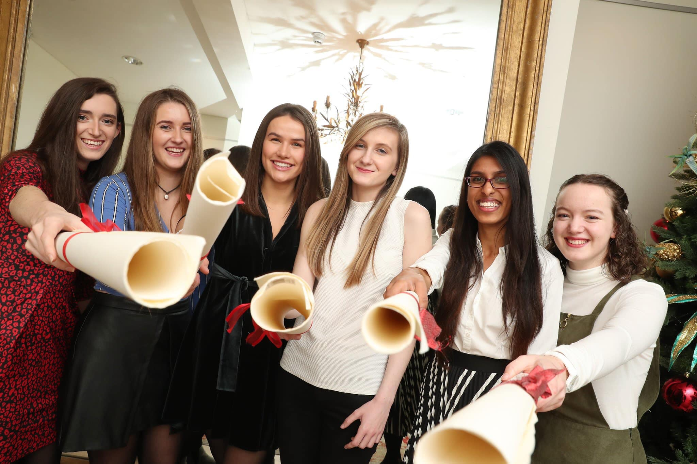

Leaving Certificate.
Started first year of General Engineering at Trinity College Dublin.
Awarded the Intel Women in Technology Scholarship.
Worked part-time in Debenhams Ireland.
My Story
This page brings together the timeline from 2018 to 2026 in one place, with the major turning points across study, work, travel, and sport.
A bit of my journey so far...
Leaving Certificate.
Started first year of General Engineering at Trinity College Dublin.
Awarded the Intel Women in Technology Scholarship.
Worked part-time in Debenhams Ireland.

Summer internship at Intel Ireland.
Played for the U21 Irish Canoe Polo team and competed at the European Championships in Coimbra, Portugal.
Elected Squad Liaison for the Canoe Polo Ireland committee.
Started second year of General Engineering at Trinity College Dublin.
Covid-19 pandemic.
Second summer internship at Intel Ireland, completed remotely.
Specialised in Electronic and Computer Engineering at Trinity College Dublin.
Awarded the Unitech International Scholarship.
Moved to Switzerland.
Studied abroad at ETH Zurich.
Moved to Munich, Germany.
Worked as a Hardware Electrical Engineer at Truma.
Managed the Irish Canoe Polo women's team at the World Championships in St. Omer, France.
Moved home to Ireland to continue my studies.
Got really sick.
Started working at Sport Ireland as an Anti-Doping Executive.
Moved to New Zealand.
Worked as a Rentals Assistant for the ski season at Remarkables, Queenstown.
Looking to begin my career as a software developer in a graduate or entry-level role where I can learn, create, and grow.